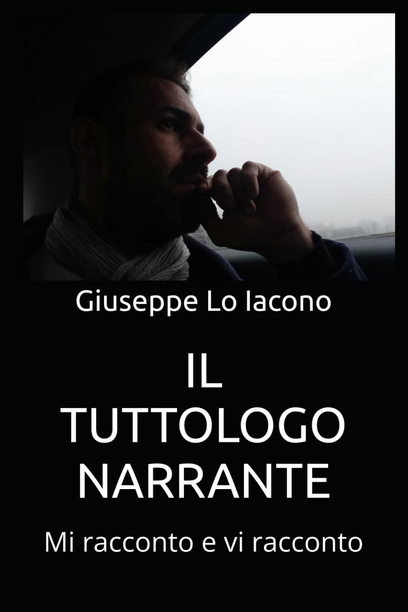

❓ Domande che il sistema non vuole tu ti faccia
- – Perché ci insegnano tutto… tranne chi siamo?
- – E se la spiritualità fosse una chiave di libertà?
- – Chi ha deciso che la verità ha un solo volto?
- – Perché il silenzio fa così paura a chi ha perso sé stesso?
Chi sono
Sono Giuseppe Lo Iacono, autore indipendente e narratore fuori dagli schemi. Scrivo per scuotere coscienze, offrendo storie che vanno oltre l'apparenza e smascherano le verità nascoste. Dalla distopia al risveglio spirituale, dalla scienza quantistica alla denuncia del sistema, ogni mio libro è un seme piantato nella mente di chi vuole vedere davvero.
🔍 Non devi credere a me
— Giuseppe Lo Iacono
📘 I miei libri
Il Tuttologo Narrante
Una provocatoria esplorazione della disobbedienza civile. Un libro-manifesto per chi non si accontenta delle verità ufficiali.
Acquista oraLa Liberazione dell’Anima

Una guida profonda per ritrovare il tuo sé autentico. Guarigione, risveglio, e libertà interiore in un viaggio spirituale pratico.
Acquista oraL'avventura delle particelle

Un libro per bambini (e adulti curiosi) che spiega la fisica quantistica in modo divertente, stimolante e avventuroso.
Acquista oraIl Regno dell'Oscurità Virtuale

Una distopia tecnologica in cui il potere virtuale controlla la mente. Un romanzo potente sulla libertà e la ribellione digitale.
Acquista ora⭐ Cosa dicono i lettori
“Ogni pagina mi ha fatto sentire meno solo. Finalmente qualcuno che dice quello che pensavo da anni ma non avevo mai avuto il coraggio di ammettere.”
— Matteo G.
“Non è solo un libro spirituale. È una bussola. Mi ha aiutato a uscire da una crisi interiore che nessuno capiva.”
— Giulia R.
“L’ho letto con mio figlio e mi sono emozionata più io. Spiegare la fisica quantistica con poesia? Solo Giuseppe poteva farlo.”
— Laura V.
“Sembra fantascienza, ma è la realtà di oggi portata all’estremo. Questo libro mi ha fatto spegnere il telefono… e accendere la coscienza.”
— Francesco L.
📧 Contatti
Scrivimi per collaborazioni, interviste o riflessioni personali.
Scrivimi📆 Seguimi sui social
Instagram YouTube TikTok Facebook Telegram📬 Iscriviti alla newsletter
Ricevi aggiornamenti, articoli inediti, domande scomode e anteprime dai miei libri.
📄 Blog
Leggi le mie riflessioni, racconti brevi e articoli fuori dal pensiero comune.
Vai al Blog